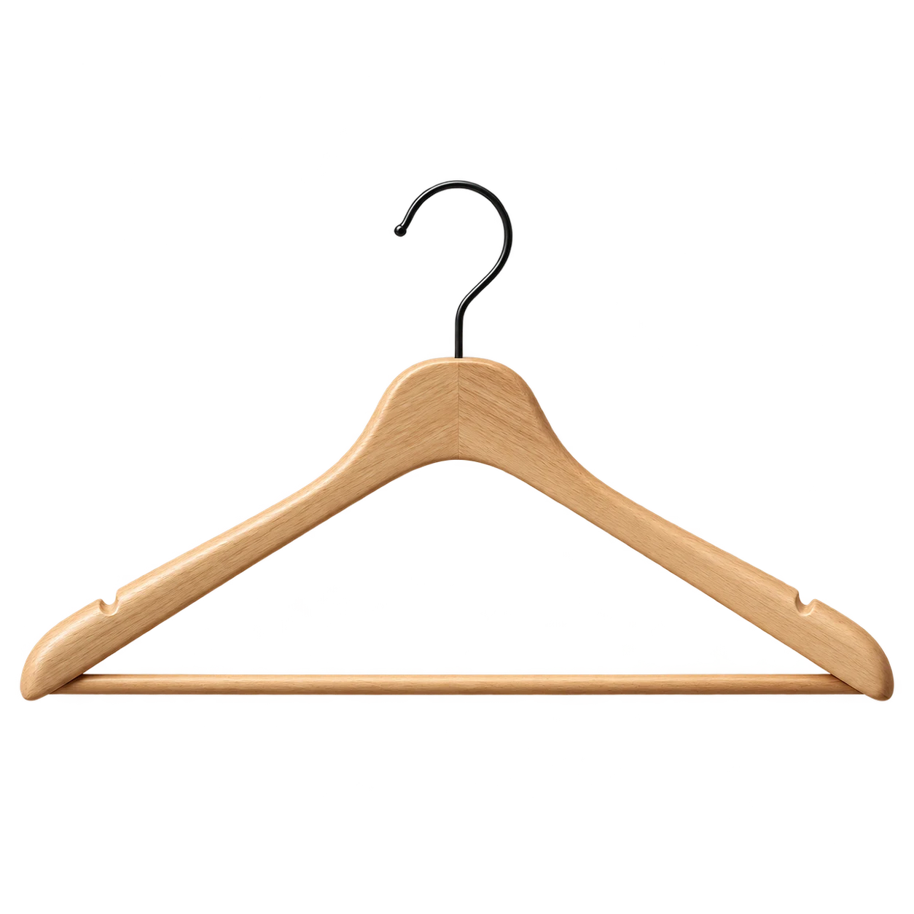
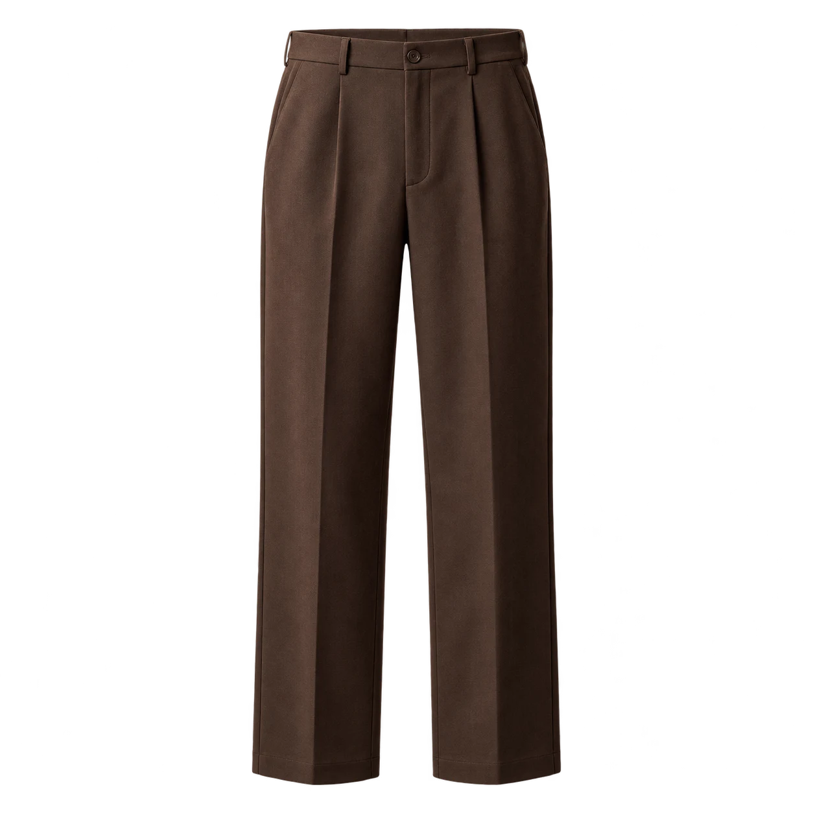
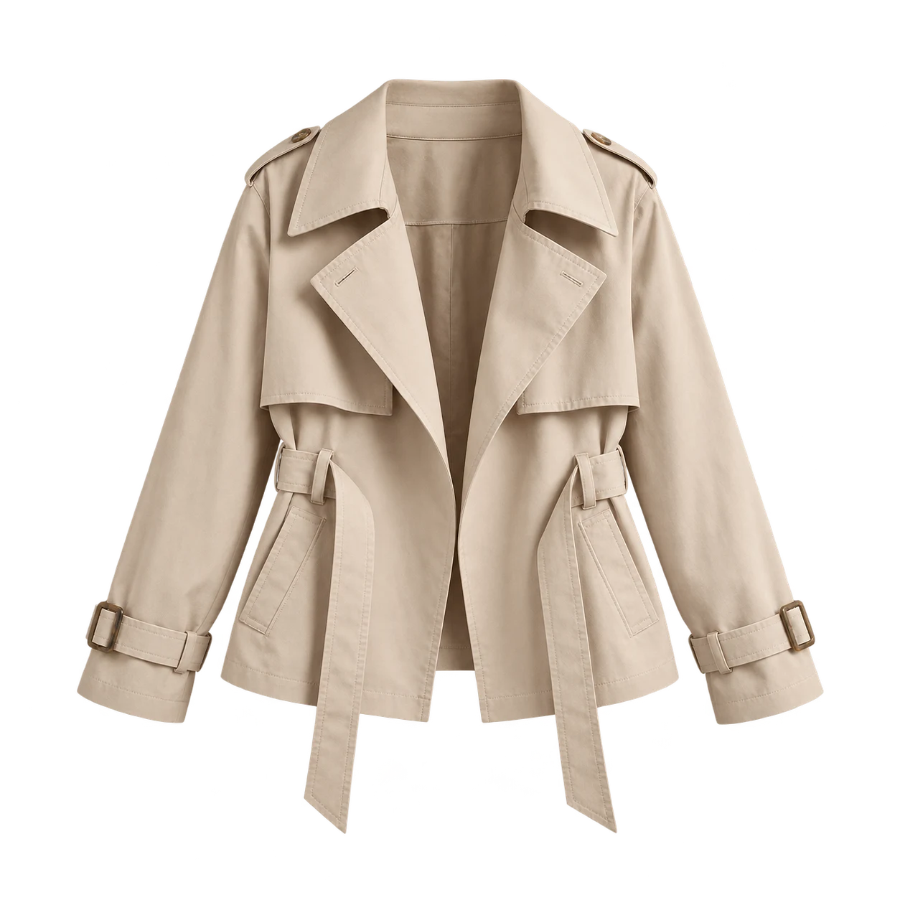

Good outfits. Already yours.
Four familiar pieces. A few more ways to wear them.



7outfits
assembledFrom a four-piece sample wardrobe.
assembledFrom a four-piece sample wardrobe.
A little note from Seam
100%
OFFICE LOOK 1 OF 7